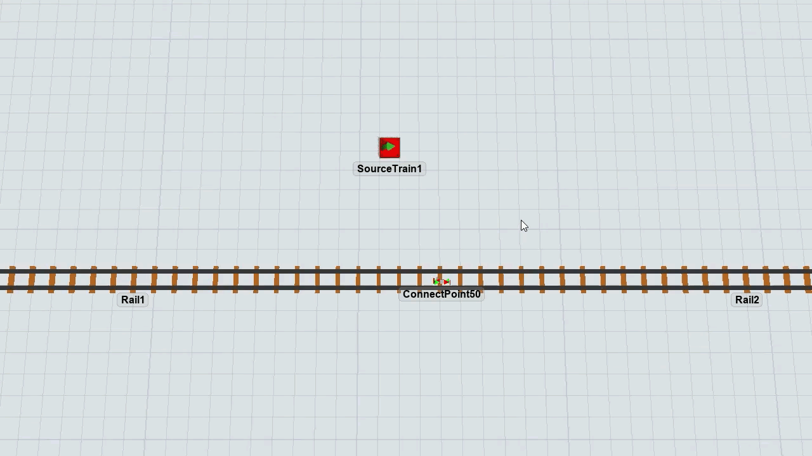
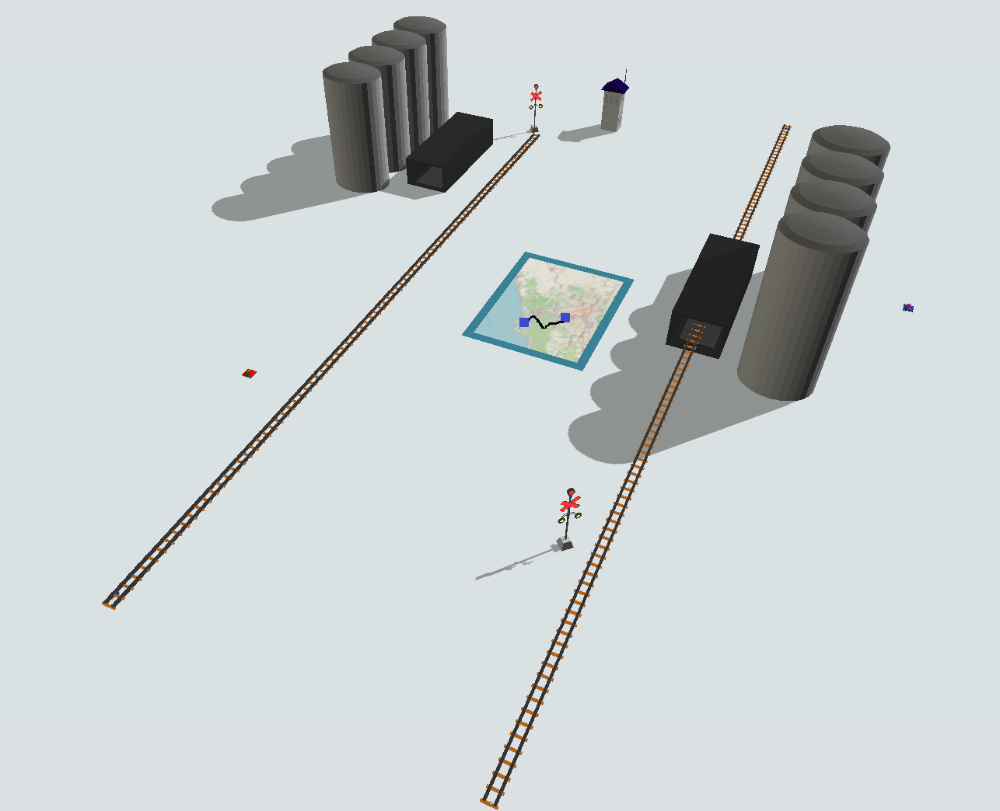
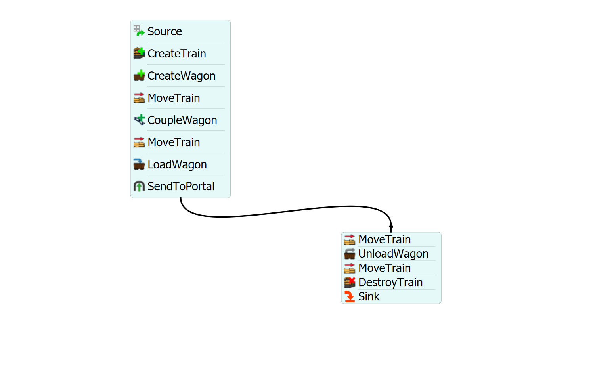

Exercise Information
Products need to be transported from City A to City B by rail and stopping at stations.
At the station in City A there are 100 units of the products, maximum weight within the station of 100000 (10 tonnes)
and start weight 10000 and the station in City B is initially empty and maximum weight 10000.
The locomotive has a maximum speed of 10 m/s when uncoupled and a maximum speed of 8 m/s when coupled.
After the first departure, the train returns only after one hour. The locomotive has only one wagon
with maximum weigth 2500 (2.5 tonnes). Create a model that represents this problem.
Use Map to enter the Points of the cities:
-
Coordinates of city A: latitude -23.9506371176703 and longitude -46.317120438522
-
City B coordinates: latitude -23.6554281754109 and longitude -46.5253099640223
Step 1 Creating objects
In order to achieve the solution for the problem, you should
create the following objects:
- Create one SourceTrain.
-
Create seven Rails, then resize every Rail xvalue to 30. Connect
the SourceTrain to the Rail2 (using the A key)
and then connect Rail1 to Rail2, Rail2 to Rail3, Rail4 to
Rail5, Rail5 to Rail6 and Rail6 to Rail7 via proximity, Rail3 and Rail4 will not be connected.
-
Create a RailControlPoint and place it on Rail1, Rail3, Rail6 and Rail7. The
RailControlPoint should change color if it is connected
correctly to the Rail. We recommend the creation of the
RailControlPoint in a empty space and, after that, you can
place it on the Rail.
-
Create two Stations, then connect its center port (using the S key) to the RailControlPoint
on Rail3 and the other station to RailControlPoint on Rail6.
- On the initial Station, set the "Start Weight" and "Max Weight" to 10000 (10 tonnes) and, on the other one, set "Max Weight" to 10000 (10 tonnes).
- Create the Map and two Points inside the map.
-
Connect the Points with the A key, click on the path line and
change the "Type" to Freight RailWays.
-
Create Two GISPortal, connect with the A key GISPortal1 to GISPortal2 and
Point A on the map and GISPortal2 to Rail5 and Point B.
-
Create two Sink, connect with the A key Silo2 to Sink1 and Sink2 next to Rail7 (no connection).

Your model should be looking like this:

Step 2 Processflow Configuration
In order to achieve the solution for the problem, you should
create the following processflow tasks:
- Create a Schedule Source.
- Create a "CreateTrain" and a "CreateWagon" activity.
- Create a "MoveTrain" activity.
- Create a "CoupleWagon" activity.
- Create a "MoveTrain" activity.
- Create a "LoadWagon" activity.
- Create a "SendToPortal" activity.
- Create a "MoveTrain" activity.
- Create a "UnloadWagon" activity.
- Create a "MoveTrain" activity.
- Create a "DestroyTrain" activity.
- Create a Sink.
Your processflow should be looking like this:

To configure your processflow tasks follow the steps:
-
In Schedule Source increase the number of arrivals to 4 and in the "Time" column enter:
- line 1: 0,
- line 2: 3600,
- line 3: 7200,
- line 4: 10800.
-
On "CreateTrain" activity, point the "Source Train" reference to your
SourceTrain. On "Customize Locomotive Speeds", set the row "Uncoupled" and column "Unloaded" to 10 and set the
row "Coupled" and column "Unloaded" to 8.
-
On "CreateWagon" activity, point the "Control Point" reference to the
RailControlPoint on Rail1, set wagons quantity to 1 and set
"Max Weight" to 2500 (2.5 tonnes).
-
On the first "MoveTrain" activity, set train reference to "token.train" and destiny
to the label "token.wagon".
-
On "CoupleWagon" activity, set train reference to "token.train" and wagon
reference to "token.wagon".
-
On the second "MoveTrain" activity, set train reference to "token.train" and destiny
to the RailControlPoint on Rail3.
-
On "LoadWagon" activity, set train reference to "token.train" and "Control Point"
reference to the RailControlPoint on Rail3.
Leave the "Load Type" on "Full Loaded Release Only".
-
On "SendToPortal" activity, set the reference to the respective entry GISPortal object.
-
On the third "MoveTrain" activity, set train reference to "token.train" and destiny
to the RailControlPoint on Rail6.
-
On "UnloadWagon" activity, set train reference to "token.train" and "Control Point"
reference to the RailControlPoint1 on Rail6.
-
On the fourth "MoveTrain" activity, set train reference to "token.train" and destiny
to the RailControlPoint on Rail7.
-
On "DestroyTrain" activity, set train reference to "token.train" and "Sink" reference
to the Sink next to Rail7.
With this configuration your model is ready.